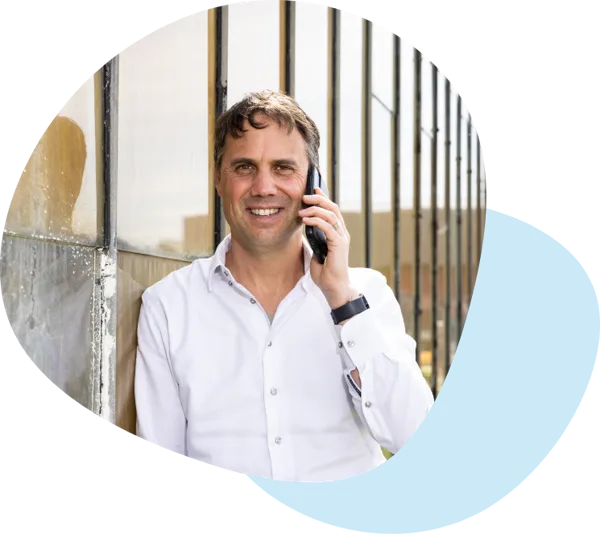
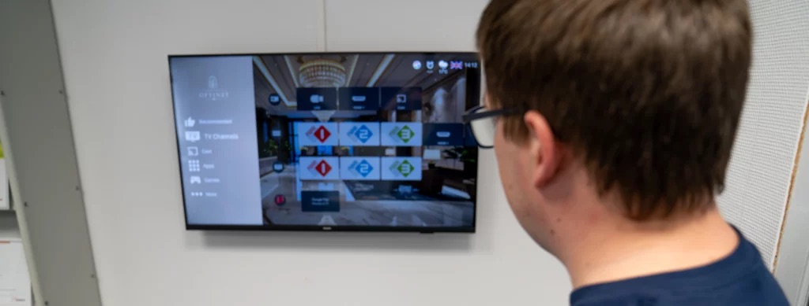
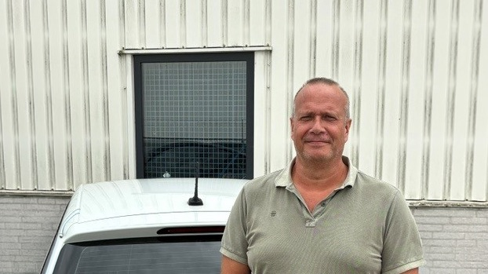
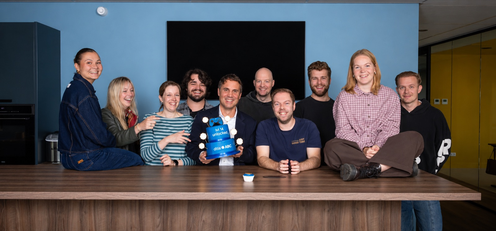

Vanaf 1 november gaan Foome en ditisABC samen verder. Voor jullie verandert er in het werk weinig: ons marketingteam neemt het stokje over, en Romy, die jullie site en LinkedIn al jaren mee vormgeeft, gaat mee. Het plan voor het vierde kwartaal loopt gewoon door. We keken alvast vooruit: wat staat er, waar vinden mensen jullie in Google, en hoe zorgen we dat zichtbaarheid aanvragen en sollicitaties oplevert?

Michel GoulmyEigenaar van ditisABC. Bekeek met ons team de site, de zoekresultaten en het Q4-plan, oktober 2026.
Wat verandert er per 1 november?In het werk niets. Dezelfde kennis van Optinet en het tweewekelijkse overleg blijft. Nieuw: elke week denken marketing en techniek samen over jullie na, en specialisten in advertising, video, design en vindbaarheid schuiven aan waar het helpt.
Wat gebeurt er met het Q4-plan?Dat zetten we voort, met dezelfde doelen voor 31 december: gevonden worden op beheer en "as a service", en meer aanvragen uit de site. Bekijk ons voorstel.
En de nieuwe website?Wie hem ook bouwt: wat jullie nu in Google waard zijn, moet mee naar de nieuwe site. Dat gaat vaker mis dan je denkt. Zo voorkomen we dat.
wifi as a service50 keer per maand gezocht7positie
netwerkbeheer500 keer per maand gezocht-nog niet
Posities en zoekvolumes zijn schattingen van Ahrefs. Een momentopname: posities wisselen per dag en per plek.
dit is wat we deden
Al jaren samen aan de slag
Het team van Foome bouwde jullie site en werkt sindsdien elke week aan Optinet: de contentkalender, LinkedIn, blogs, de vacatures en de site zelf. Elke twee weken met Pascal aan tafel. Dit is wat we de afgelopen twee jaar deden. Die kennis gaat mee naar ditisABC.
A
LinkedIn als vast kanaal
Een contentkalender per kwartaal, posts, visuals en de LinkedIn-nieuwsbrief. Doelen voor 2025 en 2026 opgesteld, en de profielen van het team aangescherpt. De betrokkenheid op jullie posts ligt op 5,9%, ruim boven de circa 2% die gebruikelijk is in de branche.
B
De mensen van Optinet in beeld
Interviews en de reeks "Even voorstellen" met Sebastiaan, Sander, Peter en Wilco, een gesprek op locatie over het hospitality-werk, en de kerstvideo's van 2024 en 2025. Juist die posts met mensen erin scoren het best.
C
Een nieuwe Werken bij-pagina
In het voorjaar van 2026 opnieuw opgebouwd, met zes vacatures die het team zelf kan bijwerken, beveiligde sollicitatieformulieren en vacaturegegevens die Google for Jobs kan lezen. "Datamonteur" staat al op positie 8.
D
Blogs die gelezen worden
Over wifi 6 en 7, de 5G back-up router, Chromecast en recent de overstap van schotel naar IPTV. Daarnaast titels en omschrijvingen bijgewerkt op basis van Search Console, en interne links tussen de blogs.
E
De site veilig en bij
Maandelijkse updates, een snelheidsplugin, beveiliging tegen spam, en in december 2025 een malware-melding direct opgepakt en opgelost. Nieuwe collega's en foto's staan er meestal dezelfde week op.
F
Meten en plannen
E-mailhandtekeningen met meetcodes, een dashboard met de cijfers, en in september de strategiesessie met het plan voor het vierde kwartaal. Daarin vonden we ook waarom zo veel bezoek "zonder herkomst" binnenkwam, en dat is nu rechtgezet.
dit is google
Gevonden op kennis, nog niet op beheer
Jullie blogs doen het goed: op vragen over wifi staan jullie bovenaan. Op de vragen waar opdrachten achter zitten, beheer en wifi of netwerk "as a service", komen jullie nog nauwelijks in beeld. Dat was de kern van het Q4-plan, en daar zit de groei.
3xpositie 1 op vragen over wifi, met jullie blogs
5,9%betrokkenheid op LinkedIn, tegen circa 2% in de branche
0klikken op 26 zoekvragen rond beheer en "as a service", bij ruim 3.700 vertoningen
750zoekopdrachten per maand op "netwerkbeheer" en "netwerkbeheer uitbesteden"
Zoekvraag
Per maand
Positie
netwerkbeheer
500
nog niet in beeld
netwerkbeheer uitbesteden
250
nog niet in beeld
wifi site survey
150
nog niet in beeld
netwerk engineer vacature
150
nog niet in beeld
managed wifi
90
nog niet in beeld
netwerkspecialist
90
12
network as a service
70
nog niet in beeld
wifi as a service
50
7
datamonteur
40
8
iptv hotel
30
nog niet in beeld
Wat het Q4-plan al liet zien: één blog, over Chromecast, levert ruim de helft van alle klikken uit Google. Dat verkeer is goud waard als het doorloopt naar Managed IPTV en een hotelcase. En de beheerpagina's beantwoorden de vraag van een inkoper nog niet: serviceniveaus, responstijden, een prijsindicatie, een klantcase. Dat is precies het werk voor november en december.
Posities en zoekvolumes: schattingen van Ahrefs voor Nederland, 30 oktober 2026. Klikken en vertoningen: Search Console, 1 januari tot 5 augustus 2026, uit het Q4-plan.
dit is de nieuwe site
Een nieuwe site? Dan gaat de vindbaarheid mee
Er komt een nieuwe website. Bouwt een andere partij hem, prima: we werken graag met andere bouwers samen. Wat telt, is dat de waarde die er nu staat meegaat. Jullie blogs staan op 1 voor vragen over wifi, de vacatures worden gevonden via Google for Jobs, en andere sites verwijzen naar jullie pagina's. Bij een nieuwe site zien we dat nog vaak verloren gaan: pagina's verdwijnen zonder doorverwijzing, en posities en aanvragen zakken weg. Ook met dezelfde adressen kan het misgaan, als teksten, titels of vacaturegegevens onderweg dunner worden. Dat voorkomen we zo, en de nieuwe site scoort vanaf dag één beter op beheer dan de huidige.
A
Dezelfde adressen waar het kan
De eenvoudigste bescherming: de pagina's houden hun huidige adres, zodat links en posities gewoon blijven werken. Alleen waar pagina's samengaan, zoals de beheerpagina's, komt een vaste doorverwijzing naar de nieuwe pagina. Wij leveren de lijst met pagina's die nu het meest opleveren: de homepage, de blogs over wifi 6 en 7, Chromecast en de 5G-router, en de vacatures.
B
Een structuur per zoekvraag
Welke pagina welke vraag beantwoordt: één pagina voor beheer, één voor wifi as a service, één voor network as a service, plus de branchepagina's zorg en hospitality. Die lijst geven we de nieuwe bouwer mee.
C
De teksten voor beheer en prijs
Serviceniveaus, responstijden, een prijsindicatie per access point en veelgestelde vragen. Wat we nu schrijven, landt straks één op één in de nieuwe site.
D
Meten vanaf de eerste dag
Search Console, Analytics en Tag Manager overgezet, met de afspraken over meetcodes en aparte doelen voor een offerte, een beheeraanvraag en een sollicitatie.
E
Een nulmeting en zes weken controle
Vóór de livegang leggen we de posities vast. Daarna kijken we zes weken lang dagelijks naar foutpagina's en posities, zodat een dip binnen een dag is opgelost.

Graag denken we mee over de briefing, wie de site ook bouwt. Vraag de bouwer hoe hij zorgt dat er geen dip ontstaat; een goede bouwer heeft daar meteen een antwoord op. Wij leveren de lijst met pagina's die nu het meest opleveren, leggen de nulmeting vast en kijken op de testomgeving mee vóór de livegang. Laat ons weten hoe ver de keuze is en wanneer de site live moet, dan stemmen we de planning af.
dit is wie doet wat
Alles van online op één rij
Hosting, website, onderhoud, vindbaarheid, social: online bestaat uit veel onderdelen. Met een nieuwe site erbij is het goed om scherp te hebben wie wat oppakt, ook voor de bouwer. Dit is ons voorstel; in het kennismakingsgesprek maken we het samen af.
ditisABCOptinetBouwer nieuwe siteSamenAf te stemmen
De basis
Optinet
Domein en DNS
De domeinnaam, DNS en het beveiligingscertificaat. Op naam van Optinet; aanpassingen bij de livegang doen we in overleg.
Optinet
E-mail
Mailboxen en verzendinstellingen blijven waar ze nu zijn. Wij zorgen dat formulieren en de nieuwsbrief goed aankomen.
Af te stemmen
Hosting
Server, back-ups en beveiliging. Nu bij TransIP. Voor de nieuwe site kiezen we samen: bij de bouwer of bij ditisABC.
Optinet
Accounts en toegang
Google, LinkedIn en de hosting staan op naam van Optinet. Wij krijgen toegang, jullie houden de sleutels.
De website
Bouwer nieuwe site
Website bouwen
Ontwerp, techniek en livegang. Wij leveren de structuur per zoekvraag, de teksten en de lijst met pagina's die mee moeten.
Af te stemmen
Technisch onderhoud
Updates van WordPress en plugins, licenties zoals de cookiebanner, snelheid en beveiliging. Nu bij ons; na de livegang bij de partij die host.
ditisABC
Inhoudelijk beheer
Pagina's bijwerken, foto's, nieuwe collega's, vacatures plaatsen en weghalen. Een mail of appje is genoeg.
Gevonden worden
ditisABC
SEO
Structuur per zoekvraag, teksten, technische vindbaarheid en Search Console. Ook tijdens en na de verhuizing naar de nieuwe site.
ditisABC
GEO, gevonden in AI
Genoemd worden in ChatGPT, Perplexity en de AI-antwoorden van Google, met een eigen meting per maand.
ditisABC
SEA
Google Ads op beheer en "as a service" waar het past, gemeten op aanvragen. Het advertentiebudget gaat rechtstreeks naar Google.
Content en werving
ditisABC
Social
LinkedIn: de contentkalender, drie bijdragen per week, de nieuwsbrief en het bijhouden van reacties.
Samen
Content
Blogs, cases, interviews, foto en video. Wij schrijven en maken; jullie leveren de kennis, de projecten en de mensen.
ditisABC
Werving en employer branding
Vacatureteksten met salarisindicatie, portretten van technici en campagnes die op sollicitaties sturen.
Sturen
ditisABC
Meten en rapporteren
Analytics, Tag Manager en Search Console ingericht, en elke maand een rapport met wat het opleverde.
Samen
Plannen en afstemmen
Elke twee weken overleg: wat er speelt bij Optinet, wat we maken en wat er live gaat.
Optinet
Input en akkoord
Prijzen, responstijden, cases en foto's van projecten, en een akkoord op wat er live gaat.
dit is werving
Technici vind je met verhalen van technici
Goede mensen vinden is lastig, en campagnes alleen brengen ze niet binnen. Wat wél werkt, laten jullie eigen cijfers zien: de persoonlijke vacaturepost scoorde 9,8% betrokkenheid en het hospitality-verhaal 10,3%. Techniek met mensen erin wint van techniek alleen.
A
Vacatures aan echte projecten koppelen
"Werken aan het netwerk van een ziekenhuis" of "het wifi- en IPTV-netwerk van een hotel". Hetzelfde verhaal helpt de werving én de verkoop in zorg en hospitality.
B
Korte portretten op locatie
Foto en video van technici aan het werk, gedeeld door de technici zelf op LinkedIn. Hun netwerk bestaat uit precies de mensen die jullie zoeken.
C
Een vacaturepagina die verkoopt
Per vacature een dag uit het werk, wie je collega's zijn, en solliciteren in twee minuten. De werkenbij-pagina zegt het zelf al: mentaliteit telt meer dan achtergrond. Dat verdient een plek in elke vacature.
D
Adverteren op sollicitaties, niet op klikken
Campagnes alleen met kloppende meetcodes, en we sturen op wat telt: een sollicitatie of een gesprek. Ook gericht op mensen die nu nog in een ander vak werken.
E
De collega's als wervers
Ruim veertig medewerkers kennen samen honderden vakmensen. Een eenvoudige aanbrengactie met een vaste post per kwartaal maakt dat zichtbaar.
F
Een salarisindicatie in elke vacature
Nu staat er "een passend salaris". Een bandbreedte, bijvoorbeeld op basis van de cao Metaal en Techniek, maakt de vacature concreet. Werkzoekenden filteren op salaris, en Google for Jobs toont het in de zoekresultaten als het in de vacaturegegevens staat. De nieuwe wet loontransparantie (verwacht in 2027) vraagt werkgevers sollicitanten vóór het gesprek over het salaris te informeren: de vacature is daar de makkelijkste plek voor.

dit is ons voorstel
Eerst beheer op de kaart, dan zorg en hospitality
We zetten het Q4-plan voort met dezelfde doelen voor 31 december, en bouwen daarna door. Dit werken we graag met jullie uit:
A
Beheer en "as a service" vindbaar
Zeven pagina's over beheer worden er drie, elk met één duidelijke vraag.
Drie serviceniveaus met responstijd en een prijsindicatie per access point.
Een rekenvoorbeeld kopen tegenover afnemen als dienst. Dat heeft nog niemand in Nederland.
B
Zorg en hospitality als speerpunt
Een klantcase per branche, met naam en resultaat.
Het Chromecast-verkeer doorgeleid naar Managed IPTV en de hotelcase.
Artikelen over netwerken in de zorg, IPTV voor hotels en ziekenhuizen, en uitbesteden van beheer.
C
Werving die sollicitaties oplevert
Een vaste reeks portretten en projectverhalen op LinkedIn.
De vacaturepagina's scherper, met een salarisindicatie en een korte sollicitatie.
Desgewenst een campagne, gemeten op sollicitaties.
D
Gevonden in Google en AI
Elke maand dezelfde zoekvragen gemeten, en de vragen die inkopers aan ChatGPT en Google stellen.
Veelgestelde vragen en gestructureerde gegevens, zodat Google en AI jullie diensten begrijpen.
Een kort rapport per maand in gewone taal.
dit is hoe we het aanpakken
Maand voor maand, met een vast ritme
We pakken het plan op waar het staat. Elke maand een paar concrete stappen, en elke maand meten we wat het oplevert.
NovemberPropositie neerzettenOverdracht van de accounts en een nulmeting. De drie serviceniveaus en de prijsindicatie uitgewerkt zodra jullie die aanleveren. De beheerpagina's samengevoegd, veelgestelde vragen met gestructureerde gegevens, en de eerste artikelen over beheer.
DecemberVerdiepen en metenBranchepagina's zorg en hospitality scherper, de eerste klantcase, Chromecast doorgelinkt naar Managed IPTV. Eindmeting van het Q4-plan.
JanuariPlan voor 2027Samen terugkijken op de doelen van 31 december, het plan voor het eerste kwartaal, en de afstemming met de bouwer van de nieuwe site.
Elke maand vast
A
Drie LinkedIn-posts per week
Eén technisch, één menselijk en één klantverhaal, met visuals van ons designteam. We vragen het team om mee te delen, want daar zit het bereik.
B
Twee artikelen per maand
Steeds gericht op een vraag van een inkoper of facilitair manager: probleem, verkeerde aanpak, betere aanpak, checklist of case.
C
Een werving-verhaal per maand
Een portret, een project of een dag uit het werk, dat zowel op LinkedIn als bij de vacatures een plek krijgt.
D
Meten in Google en AI
Dezelfde zoekvragen en dezelfde vragen aan AI, elke maand. Zo zien jullie zwart op wit of de beheerpagina's aanvragen opleveren.
E
Het tweewekelijkse overleg, met een interview
Elk overleg een kwartier opgenomen gesprek met een technicus of met Pascal. Daar halen wij meerdere posts en een artikel uit. Zo kost content jullie zo weinig mogelijk tijd.
Wat we van jullie vragen: een prijsindicatie en responstijden per serviceniveau, twee klantcases met toestemming voor naam en resultaat, foto's van projecten (een appgroep met de technici werkt prima), en één persoon die akkoord geeft. De rest doen wij.
dit is ditisABC
Waarom wij
A
Bekend werk, een groter team
De kennis van Optinet gaat mee naar ditisABC. Daar werkt ons marketingteam samen met specialisten in advertising, video, design en websites, en bespreken marketing en techniek elke week samen onze klanten. Wie er nodig is, schuift aan.
B
Zakelijk en technisch uitleggen
We maken content voor bedrijven die technische diensten verkopen aan andere bedrijven, waar de koper een inkoper, IT-manager of facilitair manager is.
C
Gemeten, niet gegokt
Google Partner, en we sturen op cijfers: posities in Google, vermeldingen in AI, aanvragen en sollicitaties.
dit is zo werken we
Het verlengde van jullie marketingteam
Geen losse freelancer, maar een team van specialisten uit Hillegom. Ons marketingteam kent Optinet al, en jullie bereiken het altijd via één nummer.

Het team van ditisABC in Hillegom.
2012sinds dit jaar websites en marketing
13mensen in ons team
4xFD Gazelle, 2023 tot en met 2026
GooglePartner
Jullie vaste teamOnze marketeers pakken de strategie, de planning en het overleg met jullie op, samen met Romy die jullie site en visuals mee maakte. Elke week brainstorm ik met het hele team over onze klanten, en niet alleen vanuit marketing: ook onze developers schuiven aan, want snelheid, structuur en techniek helpen net zo goed bij de vindbaarheid. Zo kijken er meer mensen met meer kennis naar Optinet. Bereikbaar via 023-3020409, ook op WhatsApp, en marketing@ditisabc.nl.
Geen contracten. Elke dag presteren.Jullie zitten nergens aan vast. We moeten elke dag laten zien wat we waard zijn, en zo willen we het ook.
A
Onderdeel van jullie team
Korte lijnen en mee in jullie planning. Een nieuw project, een beurs of een vacature? We horen het meteen.
B
Specialisten onder één dak
Content, advertising, video, design en websites. Wie er nodig is, schuift aan.
C
Alles open en van jullie
De accounts, de content en het beeld blijven van Optinet. Elke maand een rapport in gewone taal.
D
Snel bereikbaar
Eén appje of belletje naar 023-3020409 en het team ziet jullie vraag. Mij direct bellen of appen mag natuurlijk ook.
dit is waarom nu
Het Q4-plan loopt tot 31 december
November is de maand van de serviceniveaus en de prijspagina, december die van de cases en de eindmeting. Hoe eerder we die stappen zetten, hoe meer we vóór de jaarwisseling laten zien. Zullen we het eerste overleg met ons team plannen?
Michel GoulmyEigenaar van ditisABC
Voor het snelste antwoord bel of app je ons team, of mail je naar marketing. Mij direct bellen of mailen mag natuurlijk ook.
Analyse: Michel Goulmy en het team van ditisABCWerk sinds november 2024 uit onze eigen registratie. Posities en zoekvolumes zijn schattingen van Ahrefs, 30 oktober 2026. Klikken, vertoningen en LinkedIn-cijfers uit het Q4-plan (1 januari tot 5 augustus 2026). Site nagelopen op 31 oktober 2026.
dit is ditisABC
Erkenning en partners
2023202420252026
Vier keer op rij een van de snelst groeiende bedrijven van Nederland
 WordPress
Websites en webshops
WordPress
Websites en webshops